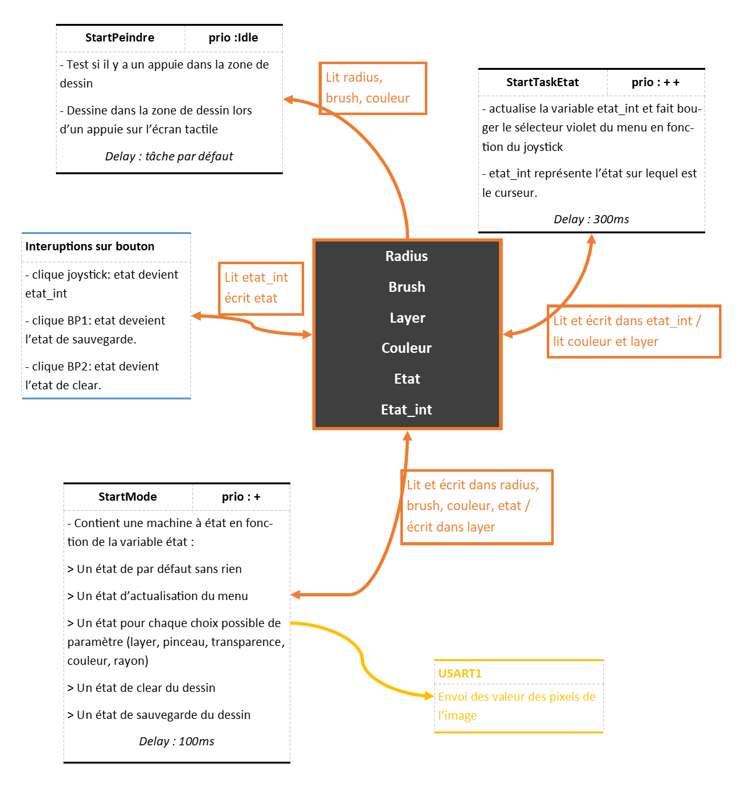

Fonctionnement du projet
Interaction entre tâches
Le Diagramme d'interaction entre tâches est le suivant : 
Les états possibles
- L'état par défaut, est celui par défaut comme son nom l'indique, il ne fait rien pour ne pas ralentir le programme.
- L'état d'actualisation du menu affiche le menu du bas ainsi que les indicateurs à droite, après avoir modifié un paramètre on vas dans cet état pour ensuite retourner dans l'état par défaut.
- Les état lié au menu du bas, layer, pinceau, transparence, couleur, rayon. Ces état on tous la même structure : on a une variable sous menu valant 0 ou 1 qui permet de savoir si le sous menu a été affiché pour ne pas afficher le contenu du sous_menu plusieurs fois. On a l'architecture suivante :
- L'état de clear de la zone de dessin se fait sur interruption.
- L'état de sauvegarde est également sur interruption.
Sélection de la couleur
Expliquer comme on choisit la couleur, lien RGB <-> Ton, Sat,Lum
Barre de sélection
Expliquer comment est faite la barre de sélection
Peindre
Expliquer comment le choix du pinceau est fait